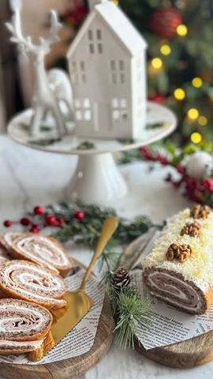

Moja beleška
SačuvanoSastojci
- Sastojci za koru
- Za fil
Priprema
1. Odvojite belanca od žumanaca. Umutite belanca u čvrst šne, pa dodajte jedno po jedno jaje. Žumanca možete dodavati jedno po jedno ili sva odjednom, dok ih lagano mutite mikserom. 2. Dodajte jogurt, zatim prosejano brašno s praškom za pecivo i prstohvat soli. Na kraju umešajte mlevene orahe. Lagano sjedinite smesu ručno ili na najmanjoj brzini miksera. 3. Izlijte smesu u pleh obložen pek papirom i pažljivo je poravnajte. Lagano lupnite plehom o radnu površinu da izađe višak vazduha. 4. Pecite u prethodno zagrejanoj rerni na 200°C oko 12 minuta, dok kora ne porumeni. 5. Još toplu koru prebacite na čistu kuhinjsku krpu i urolajte zajedno s njom. Ostavite da se potpuno ohladi. 6. Kada se kora ohladi, premažite je mešavinom feta sira i kisele pavlake, poređajte šunku preko fila i pažljivo je urolajte. 7. Umotajte rolat u foliju i stavite u frižider da se ohladi. Pre serviranja premažite ga tankim slojem pavlake i pospite rendanim kačkavaljem za savršen izgled. Uživajte u ovom predivnom predjelu i obavezno ga dodajte na svoju Božićnu trpezu! 🤎✨
Originalni opis sa Instagrama
Slani rolat s orasima 🤎 Predjelo koje pleni izgledom i ukusom, savršeno za svaku svečanu trpezu, pa i za predstojeći Božić. 🎄💫 Jednostavan za pripremu, a efektan i ukusan – ovaj rolat može biti pravi izbor! Sastojci za koru: • 6 jaja • 120 ml jogurta • 30 g brašna • 60 g mlevenih oraha • 1/2 praška za pecivo • prstohvat soli Za fil: • 200 g feta sira • 180 g kisele pavlake • 200 g šunke • 50 g rendanog kačkavalja (za dekoraciju) Priprema: 1. Odvojite belanca od žumanaca. Umutite belanca u čvrst šne, pa dodajte jedno po jedno jaje. Žumanca možete dodavati jedno po jedno ili sva odjednom, dok ih lagano mutite mikserom. 2. Dodajte jogurt, zatim prosejano brašno s praškom za pecivo i prstohvat soli. Na kraju umešajte mlevene orahe. Lagano sjedinite smesu ručno ili na najmanjoj brzini miksera. 3. Izlijte smesu u pleh obložen pek papirom i pažljivo je poravnajte. Lagano lupnite plehom o radnu površinu da izađe višak vazduha. 4. Pecite u prethodno zagrejanoj rerni na 200°C oko 12 minuta, dok kora ne porumeni. 5. Još toplu koru prebacite na čistu kuhinjsku krpu i urolajte zajedno s njom. Ostavite da se potpuno ohladi. 6. Kada se kora ohladi, premažite je mešavinom feta sira i kisele pavlake, poređajte šunku preko fila i pažljivo je urolajte. 7. Umotajte rolat u foliju i stavite u frižider da se ohladi. Pre serviranja premažite ga tankim slojem pavlake i pospite rendanim kačkavaljem za savršen izgled. Uživajte u ovom predivnom predjelu i obavezno ga dodajte na svoju Božićnu trpezu! 🤎✨ • • • #rolat #slanirolat #trpeza #recept #mojirecepti #ukusnahrana #bozicnatrpeza